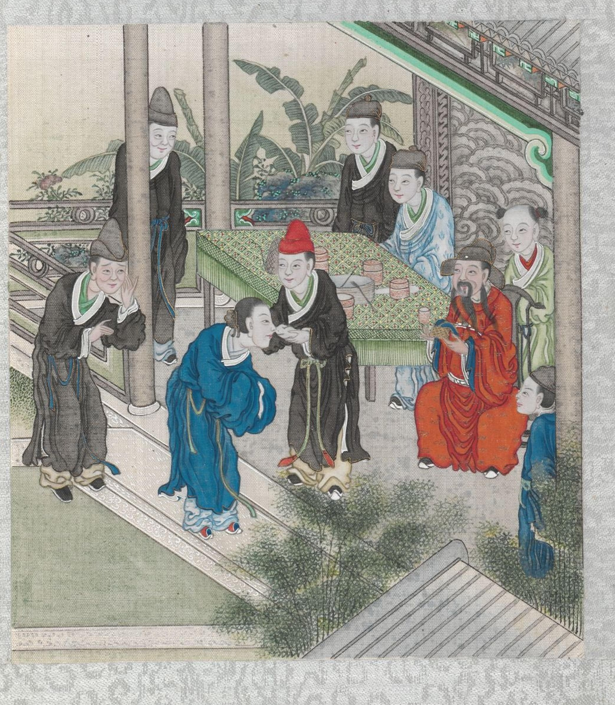
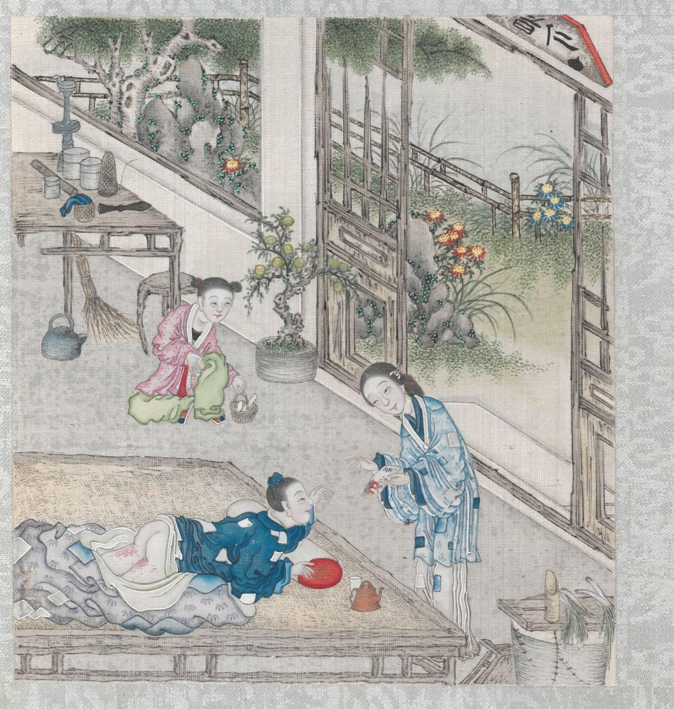
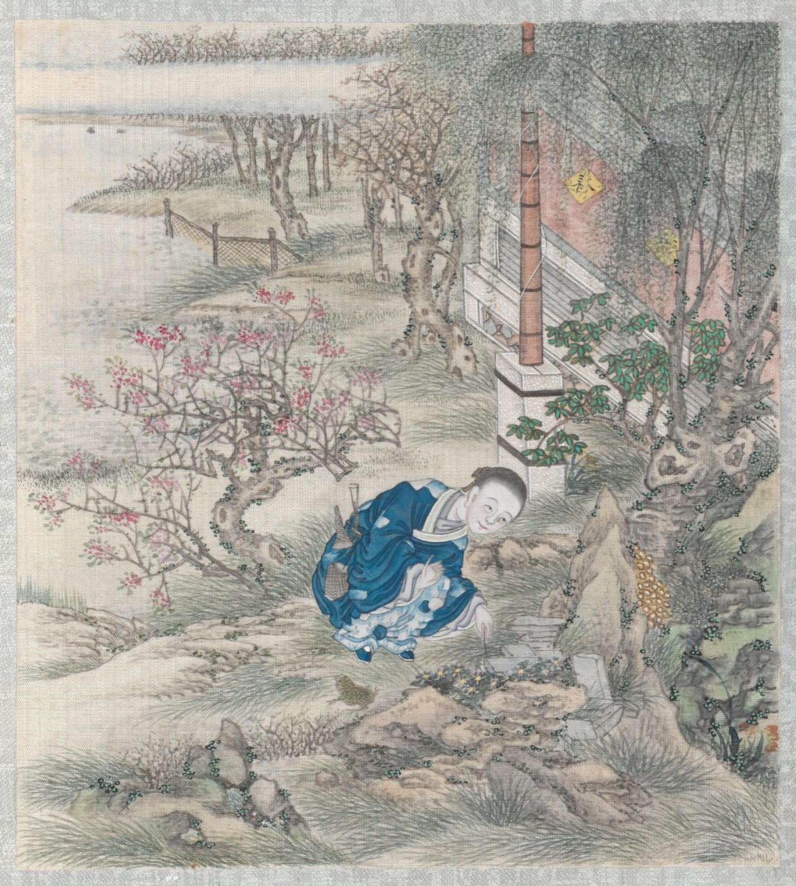
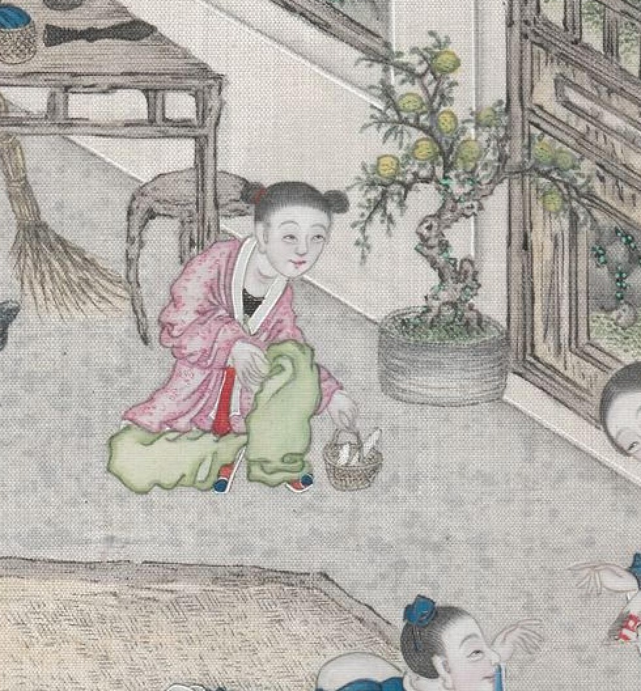
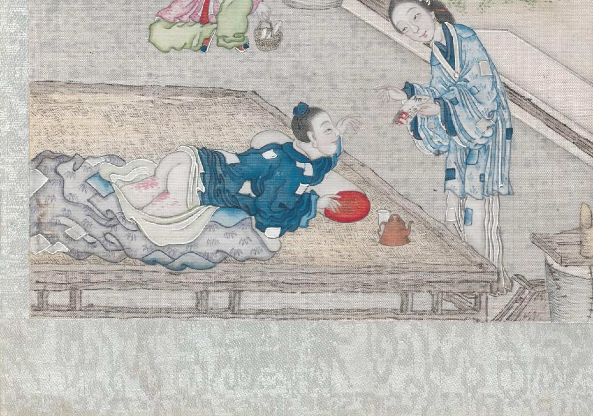
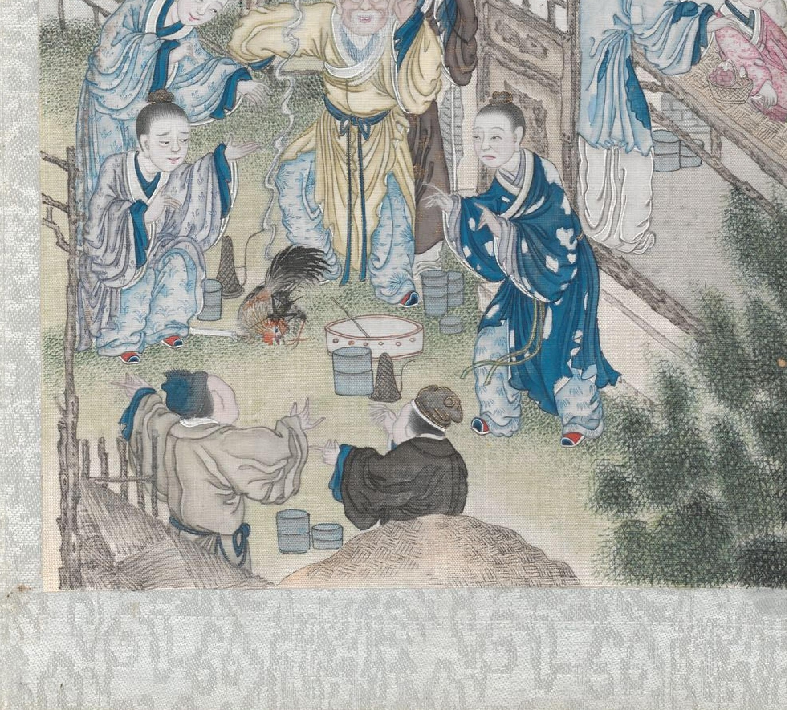
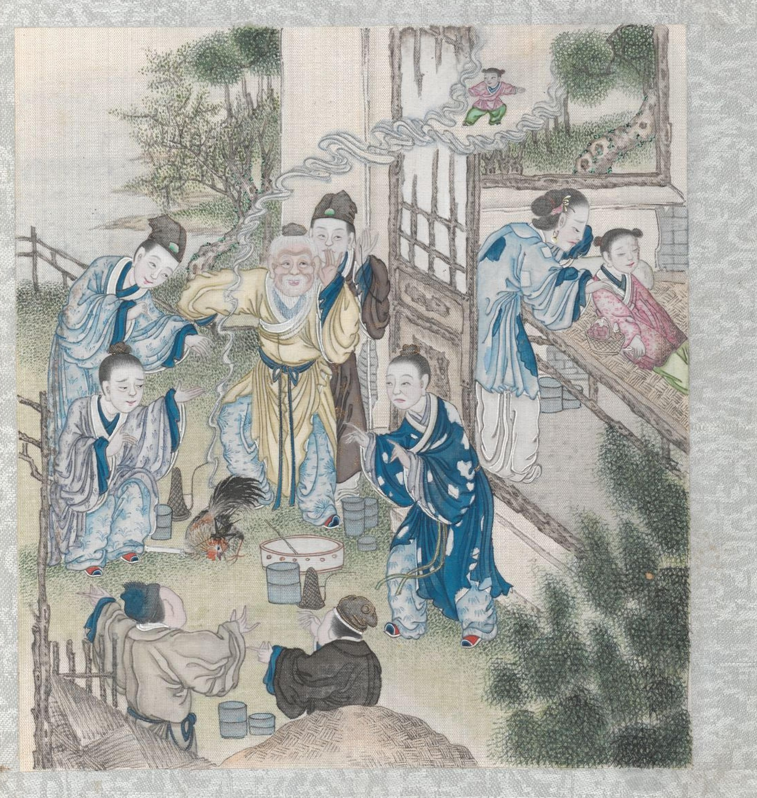
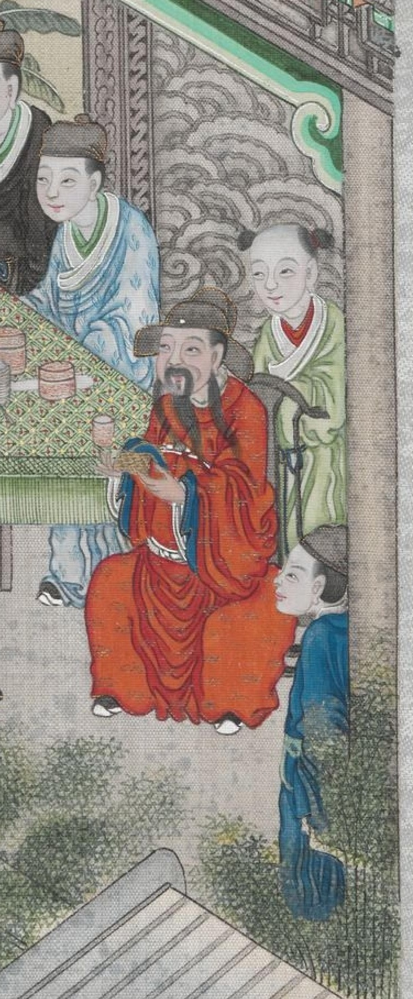

故纸堆 · VOL.03 · 聊斋志异
促织 · 蒲松龄
九岁的孩子，"卷"成了一只蛐蛐
The Cricket · Liaozhai zhi yi

云端的小儿魂影 · 《聊斋全图》第 41 册 · 清
高中课本曾经收录过这个故事。但跟着《聊斋全图》的配图，能看出更多玩味。
清代彩绘原本 · 原文精读 · 改编考
背景 · 明宣德年间
促织瞿瞿叫，宣德皇帝要
01 皇宫 — 「宣德间，宫中尚促织之戏，岁征民间。」宫里爱玩斗促织，年年向民间征调。上面的戏，下面的税。
02 县令 — 华阴县令想讨好上司，献了一头善斗的。上司一试果然中意，遂责令县里常年进贡。「试使斗而才，因责常供。」
03 官油子 — 衙门里的胥吏借机科敛丁口、摊派勒索。「每责一头，辄倾数家之产。」一虫得征，几家破产。
04 里正 — 县令把征虫差事摊派给各乡里正。里正不算正经的官，是临时被点来当差的百姓，交不上虫得自己赔。故事主人公成名就是被点的那个。

这样的官堂，是链条的每一环 · 促织第四开
促织 · 背景 — 02 / 10
人物
成名，倒霉的"老实人"
蓝袍躬身者是成名 · 促织第四开
成名读了很多年书，「操童子业，久不售」，还是个童生。为人拘谨木讷，衙门里的官油子最是喜欢欺负这种人，便把他报上去充当里正。
这是个要贴钱赔产的苦差，胥吏看上的便是成名那点家底，所以成名「百计营谋不能脱」。不到一年，「薄产累尽」。
这是个要贴钱赔产的苦差，胥吏看上的便是成名那点家底，所以成名「百计营谋不能脱」。不到一年，「薄产累尽」。
促织 · 人物 — 03 / 10
绝境
虫没捉到，人先不中了
征虫期限到了，成名不忍也无力向乡亲摊派，却又无所赔偿，只好早出暮归，探石发穴，自去搜觅，偶尔逮到几头又「劣弱不中于款」。县令严限追比，十几天杖至百余，「两股间脓血流离」，转侧床头，惟思自尽。

成名受杖卧床，妻儿在旁 · 促织第一开
实在没活路了，妻子凑钱去求村里的驼背巫。巫婆从帘子里丢出一张纸，妻子打开一看：不是字，却只画着一处地方——殿阁、怪石、荆棘丛，一只青麻头蟋蟀伏在里面。
促织 · 绝境 — 04 / 10
按图索骥
画里的地方，竟真有
成名反复琢磨：「得无教我猎虫所耶？」细看画中景致，竟与村东大佛阁逼似。他强起扶杖寻去，古坟蔚起，怪石鳞鳞，在蒿莱中侧听、转进、徐行，如寻针芥。翻了半天，果有一头：巨身修尾，青项金翅。举家庆贺，把它当祖宗一样供在盆里，蟹白栗黄地喂着，就等到期交差。

成名于佛阁荒草间寻虫 · 促织第二开
促织 · 得虫 — 05 / 10
急转
儿子打开了那竹筐

画里的粉衣小童，就是后来跳井的儿子 · 促织第一开（局部）
成名不在家。九岁的儿子听见盆里有动静，十分好奇，偷偷掀开盆看。虫「跃掷径出」，迅不可捉；等他慌慌扑到手里，蟋蟀已股落腹裂，斯须就毙。母亲得知，面色灰死的道：「业根，死期至矣！而翁归，自与汝复算耳！」孩子想起父亲平日里对外软弱，但对自家暴厉的情形，大哭，惶惶地跑了出去。
「既而得其尸于井。」——成名回来闻知，如坠冰窟，怒冲冲到处寻儿子算账。但真找到了，却是在井里，顿时化怒为悲，万念俱灰，抢呼欲绝。
促织 · 失虫 — 06 / 10
半夜
孩子去了三魂
傍晚准备裹尸下葬，近抚之，气息惙惙然。忙放到榻上，半夜，儿子竟悠悠转醒——只是眼神有点打直。夫妻心下稍慰，刚一放松，成名回头瞥见空盆，复又气断声吞，整夜目不交睫。天将破晓，门外忽然传来促织的叫声。

同一开画里的卧榻细节 · 促织第一开（局部）
墙上一只蟋蟀：短小，黑赤色，梅花翅，方首，长胫，形若土狗。成名没指望间，它却忽地跃落他的衣襟，模样意态倒还周正。眼下再也寻不到第二只，只能硬着头皮拿它去公堂交差。
直到一年多后，儿子精神复旧，才说出真相：我变成了一只蟋蟀，「轻捷善斗，今始苏耳」。
直到一年多后，儿子精神复旧，才说出真相：我变成了一只蟋蟀，「轻捷善斗，今始苏耳」。
促织 · 复苏 化虫 — 07 / 10
上场
斗虫走鸡
村中好事的少年养着一头从没输过的「蟹壳青」，上门挑战，看见成名的小虫，掩口胡卢而笑。成名想：留着这劣物终究没用，不如拼博一笑。初时，小虫伏在盆里不动，蠢若木鸡，少年笑了好几回，挑逗地用猪鬣反复撩拨，小虫暴怒直奔——一口咬住「蟹壳青」的脖颈，少年大惊。

「直龁敌领」 · 促织第三开（局部）
偏巧一只鸡瞥见，径进以啄。小虫跃开尺余，却被鸡逼在爪下。成名顿足失色——旋见鸡伸颈乱摆，临视，则虫集冠上，力叮不释。
促织 · 斗虫 — 08 / 10
结局 · 皆大欢喜？
一人飞升，仙及鸡犬
县令先试：与他虫斗，虫尽靡；又试之鸡，果如成名所言。县令大喜，赏了成名，把虫献给抚军（抚军即巡抚，一省最高长官）。抚军大悦，金丝笼装好送进宫里，上疏细奏其能。
天下名虫——蝴蝶、螳螂、油利挞、青丝额——轮番上阵，无出其右；更奇的是，每闻琴瑟之声，这小虫竟应节而舞。皇帝大悦，诏赐抚军名马衣缎；县令「以卓异闻」，得了升迁的评语；成名也时来运转：免除差役，学使关照补了县学生员，几年后田百顷、楼阁万椽，裘马之盛，超过世家。
天下名虫——蝴蝶、螳螂、油利挞、青丝额——轮番上阵，无出其右；更奇的是，每闻琴瑟之声，这小虫竟应节而舞。皇帝大悦，诏赐抚军名马衣缎；县令「以卓异闻」，得了升迁的评语；成名也时来运转：免除差役，学使关照补了县学生员，几年后田百顷、楼阁万椽，裘马之盛，超过世家。

彩蛋：画家把儿子的魂魄画进了云里（画面上方），封面用的就是它 · 促织第三开
「天子一跬步，皆关民命，不可忽也。」——异史氏曰 · 人人都赢了，但 at what cost?
促织 · 结局 — 09 / 10
考证 · 改编史
促织天子 vs 仁宣之治
明《明朝小史》 — 故事源头：原型「促织天子」明宣宗。吕毖记野史：骏马换虫，妻惧自缢，夫亦自经。蒲松龄把它改成了喜剧——读来先笑，继而悲从中来。
民谚 ·《万历野获编》：宣宗密诏苏州知府况钟进促织千个，「一时语云：促织瞿瞿叫，宣德皇帝要。」
密诏 ·《王弇州史料》存原文：嫌内官采进的虫「细小不堪」，要一千个，「不要误了！故敕。」
蒲松龄除了《明朝小史》，还受了冯梦龙《济颠罗汉净慈寺显圣记》里"济公火化促织"故事的影响——儿子魂魄化虫，可能是从这儿借的。
实物 · 1993 年景德镇御窑遗址出土 21 件"大明宣德年制"款青花蟋蟀罐；宣宗一死，太皇太后下令全部砸毁。所以清宫旧藏 1174 件宣德官窑里几乎不见蟋蟀罐。文字和实物在这儿对上了

民谚→诏书→出土文物 · 促织第四开（局部）
故纸堆 · VOL.03 · 《聊斋全图》第 41 册 — 10 / 10